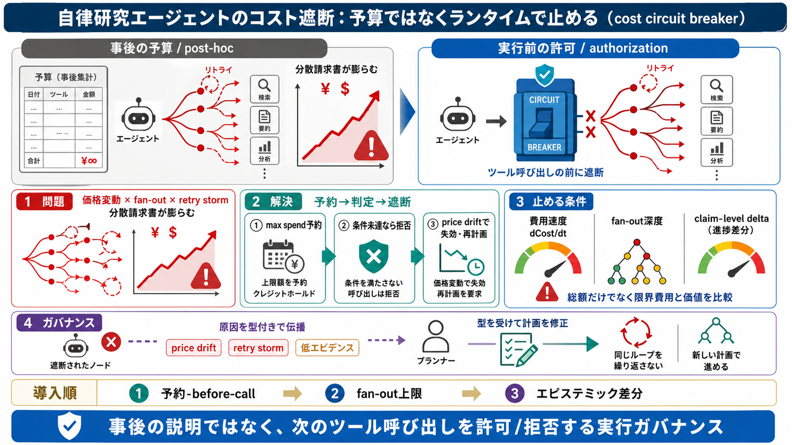

cover / 表紙
02 / 14
予算ではなく遮断
自律研究の
コスト
制御
重要なのは「事後で見積もる予算」より、実行中の分岐・リトライ連鎖を止める
ランタイムのコスト遮断（cost circuit breaker）
です。
要点 / Core
価格変動 × fan-out × retry
目的 / Goal
次のツール呼び出しを
許可/拒否
する
problem / 問題
03 / 14
火災は予算表の外
事後監査が
制御
にならない
予算スプレッドシートは「何にいくら使ったか」を説明しやすい一方、被害を広げる
次の分岐を止められません
。
予算スプレッド
観測中心（post-hoc）
コスト遮断
許可の不変条件（pre-hoc）
価格が固定の“設定値”ではなく、実行中に変わり得る“ランタイム状態”になることが本質です。
metaphor / 比喩
04 / 14
請求書の分散生成
分岐とリトライが
暴走
を作る
fan-out（枝分かれ）と retry が連鎖すると、価格変動と結びついて
分散請求書（distributed invoice）
のように費用が膨らむ失敗が起こり得ます。
入力 / Input
経済前提が変動
実行 / Execution
fan-out × retry storm
結果 / Output
「安い」想定が崩壊
そこで必要なのは、計算の更新（re-price）よりも先に
実行前に権限で止める
ことです。
architecture / 構造
05 / 14
予約→実行
遮断の設計原則
各ノード（研究単位）は開始前に
最大支出（max spend）を予約
し、予約がなければツール呼び出しを行いません。
i. 予約
max spend
を確保
ii. 判定
条件未達なら拒否
iii. 失効
価格変化で前提を無効化
失敗として上流（planner）へ伝播し、同じ前提での再試行を禁止します。
process / 手順
06 / 14
前提のズレを封じる
価格ドリフトへの対応
価格が実行中に変わったら、予約や見積もりを失効させ
失敗を型付きで伝播
し、再試行ループを断ちます。
やること / Do
予約（envelope）を破棄して再計画へ
やらないこと / Don’t
古い前提で fan-out を継続
遮断は「観測」ではなく「許可（authorization）」の問題として扱うべきです。
evidence / 証拠
07 / 14
ドルだけでは足りない
止める条件は複合
遮断のトリガは合計ドルだけでなく、
限界費用
、fan-out深度、さらに検証可能な進捗（claim-level delta）も組み合わせるべきです。
費用速度
dCost/dt
構造
fan-out 深度
質
反証可能性の増分
「総額が未達」でも、増殖した限界費用状態なら危険です（information利得がないのに支出だけ増える）。
distinction / 区別
08 / 14
価値とコストを同じ尺度へ
限界価値と限界費用
遮断は「ドル」ではなく、情報の増分（未解決対立の解消、反証可能性など）と
限界費用
を同一の尺度で比較し、見合わない作業を止めます。
見るべき価値 / Value
claim-level delta（主張の差分）
見るべきコスト / Cost
限界費用（次の枝で増える分）
代理指標（要約長など）だけだと、費用対効果が見えず「良さそうなバイビリオグラフィ」になる恐れがあります。
comparison / 比較
09 / 14
ローカル停止の限界
止めるだけでは足りない
エージェントを停止しても、plannerが同じ誤り前提で再試行し続ける可能性があります。
ローカル停止
同じ前提で再実行されやすい
原因伝播
型付き（price drift / retry storm / 低エビデンス）で上流修正
遮断はヒューズではなく
統治（governance）の一部
として設計します。
enumeration / 列挙
10 / 14
予約の落とし穴
実装エッジケース
予約やエスクロー（escrow）には、リトライ時の課金オーバージや、再予約で抜ける抜け穴など難しさがあります。
課金の丸め
料金体系の誤差
失敗中の課金
失敗でもコストが発生
再予約抜け
リトライが新しい予約を作る
UNKNOWNのような状態は「取り返しのつく失敗」ではなく、
制御上別クラス
として扱うべきです。
architecture / 構造
11 / 14
第一級のエピステミック差分
進捗をデータ化する
停止判定は抽象的な自信スコアより、主張グラフの差分や矛盾集合の変化、独立な証拠の増分など“検証可能な差分”に寄せるべきです。
見る差分 / Delta
未解決矛盾、主張グラフの変化
獲得するもの / Gain
独立証拠の増分（反証可能性）
ただし、構造化（エピステミック状態を第一級データ化）自体がコストになるため、現実実装は段階導入が必要です。
process / 導入
12 / 14
段階導入の順
現実のロードマップ
複雑な全要素を一気に導入するより、まず予約-before-call、次にfan-out制限、最後にエピステミック差分を加える流れが現実的です。
Step i
予約-before-tool-call（許可条件）
Step ii
fan-out / 深度の上限
Step iii
claim-level delta 等で停止判断
「どの指標が正しい停止を示すか」はタスクと成功定義に依存します（測定・ガバナンスが中心課題）。
closing / まとめ
13 / 14
結論
自律を
安全に枠付ける
コスト遮断は“節約策”ではなく、実行中の不確実性増幅構造（fan-out・retry storm・引用/要約の自己増殖）を制御するための
実行ガバナンス
です。
キーメッセージ
事後の説明（予算）でなく、事前の許可（遮断）
設計の方向
原因を型付きで上流へ伝播し、再試行を止める
英語用語：cost circuit breaker（コスト遮断） / fan-out（枝分かれ） / retry storm（再試行嵐） / authorization（許可）
REFERENCES
14 / 14
References
No references found